使用说明
NotchDeck 平时收起在屏幕顶部，鼠标移上去展开，移开收起。这份说明介绍安装、日常操作、每个页面的用法和设置项。标有 macOS Windows 的内容只适用于对应平台。
安装
从 GitHub Releases 下载对应平台的安装包：
| 系统 | 文件 | 说明 |
|---|---|---|
| macOS Apple Silicon（M 系列） | NotchDeck_x.y.z_aarch64.dmg | 打开 dmg，把 NotchDeck 拖进「应用程序」 |
| macOS Intel | NotchDeck_x.y.z_x64.dmg | 同上 |
| Windows 10 / 11 x64 | NotchDeck_x.y.z_x64-setup.exe 或 .msi | 运行安装程序 |
macOS 第一次打开时提示「无法验证开发者」：在「应用程序」里右键 NotchDeck › 打开，或到「系统设置 › 隐私与安全性」点「仍要打开」。
Windows 出现「Windows 已保护你的电脑」：点「更多信息」›「仍要运行」。
从源码运行
需要 Rust、Node.js 18+ 和 Tauri 的系统依赖（Windows 需要 WebView2 与 Visual Studio C++ 构建工具）。
git clone https://github.com/fangkyi03/notchdeck.git
cd notchdeck
npm install
npm run tauri dev # 开发运行
npm run tauri build # 打包安装包首次运行与授权
启动后，小岛出现在主显示器顶部中央，菜单栏 / 系统托盘里有 NotchDeck 图标（右键可打开设置或退出）。macOS 上 NotchDeck 不显示在 Dock 中。
用到下面这些功能时，系统会请求授权：
| 何时 | 系统提示 | 怎么做 |
|---|---|---|
| macOS 第一次读取 Claude 额度 | 「NotchDeck 想要使用钥匙串中的 Claude Code-credentials」 | 输入登录密码后选「始终允许」，以后不再询问 |
| macOS 第一次显示 Apple Music / Spotify | 「NotchDeck 想要控制 Music」 | 选「好」，否则无法读取正在播放 |
| macOS 第一次保存 API Key | 钥匙串访问 | 选「始终允许」 |
| Windows 第一次读取系统通知 | 「允许 NotchDeck 访问你的通知？」 | 选「是」；如果错过了，见消息提醒 |
展开与收起
- 展开：鼠标移到小岛上，停留片刻（默认 0.12 秒）就会展开。设置里可以改成「点击展开」或调整停留时间。
- 收起：鼠标移开即收起；也可以按 Esc。在输入框里打字时（例如添加待办），鼠标移开不会收起，按 Esc 或点别处即可。
- 提醒：额度用到 70% / 90%、有新消息、番茄钟结束时，收起的小岛上会显示一行提示，5 秒后消失。
- 全屏：其他应用全屏时小岛自动隐藏（可在设置中关闭）。
移动、贴边与多屏

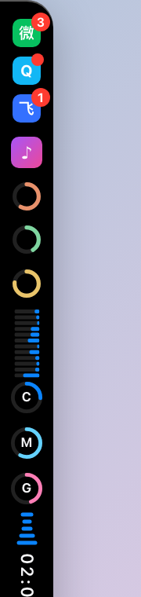
- 移动：按住收起的小岛（或展开面板的顶栏空白处）拖动。
- 贴顶：拖回距离顶边 16 像素以内会自动吸附，恢复刘海形态。
- 侧边竖向：拖到屏幕左边或右边 28 像素以内，变成竖向胶囊，可以沿边上下拖动；竖向时只显示图标类内容（歌词、网速等长文字会隐藏）。
- 贴底部：拖到屏幕底边 28 像素以内，贴在底部，展开时面板向上弹出。
- 指示条：设置 › 外观与皮肤 › 形态 选「指示条」，收起时只是一条细线，鼠标移上去展开。
- 换屏：直接拖到另一块屏幕即可，松手后会记住。也可以在 设置 › 常规 › 显示在 中选择。
- 锁定：设置 › 常规 › 锁定位置，防止误拖。「回到顶部居中」可以一键复位。
调整大小
- 展开面板：拖动面板的左、右、下边缘或两个下角。
- 整体缩放：设置 › 外观与皮肤 › 大小（80%–140%）。
- 收起宽度：默认随内容自适应；也可以在 设置 › 收起内容 中关闭「自适应宽度」并指定宽度。
切换页面
展开后有四种方式切换页面：两侧的 ‹ › 箭头、鼠标滚轮 / 触控板横滑、键盘 ← →、点底部的圆点。不需要的页面可以在 设置 › 展开页面 中关闭或调整顺序。
顶栏右侧：⟳ 立即刷新（AI 额度、模型明细、天气页），⚙ 打开设置。
快捷键
| 默认快捷键 | 作用 |
|---|---|
| ⌘ ⇧ Space / Ctrl Shift Space | 展开 / 收起小岛 |
| ⌘ ⇧ V / Ctrl Shift V | 打开剪贴板页 |
| ⌘ ⇧ T / Ctrl Shift T | 翻译剪贴板里最新的文字 |
| （未设置） | 打开待办页 |
| Esc | 收起 |
| ← → | 展开时切换页面 |
在 设置 › 常规 › 快捷键 中点击输入框，直接按下想要的组合键即可（需要至少一个修饰键）；按 Backspace 清除。如果组合键已被其他应用占用，设置页顶部会提示。
消息提醒
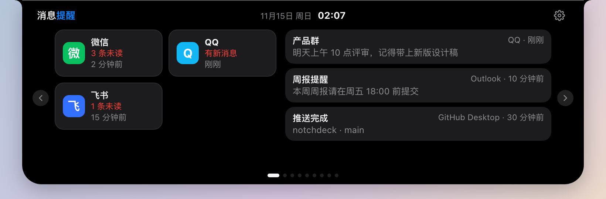
微信、QQ、企业微信、钉钉、飞书、邮件、Telegram、Slack 有新消息时，收起的小岛上会出现带红点的应用图标，消息页里按应用列出。点击即可切换到该应用。
macOS 工作方式
macOS 不支持：新版 macOS 不再向其他应用开放 Dock 图标上的未读数，这一页和收起的消息图标在 Mac 上会自动隐藏。
Windows 工作方式
- 任务栏闪烁：微信、QQ 收到消息时会让任务栏按钮闪烁，NotchDeck 据此提醒，不读取聊天内容；切换到该应用后提醒自动消失。微信缩到托盘时没有任务栏按钮，此时无法提醒。
- 系统通知：右侧列出通知中心里的通知（标题与正文）。需要在 设置 › 隐私和安全性 › 通知（Windows 10 为 设置 › 隐私 › 通知）中允许应用访问通知；QQ 等应用还需在自身设置中开启「使用系统通知」。
文件中转
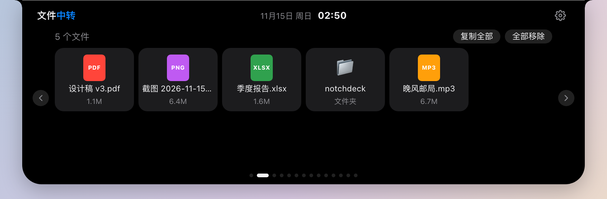
- 暂存：从访达 / 资源管理器把文件或文件夹拖到小岛上（收起时也可以），小岛会展开并切到文件中转页，松手即暂存。只记录文件位置，不会复制文件。
- 拖出：按住一个文件拖到聊天窗口、邮件、文件夹等任何地方；⌘ / Ctrl + 点击可以多选后一起拖出。
- 双击打开文件；悬停后的按钮依次是：在访达 / 资源管理器中显示、复制文件（之后可直接 ⌘V / Ctrl V 粘贴）、从列表移除。
- 文件被移动或删除后显示为灰色「已移动或删除」。
快捷翻译
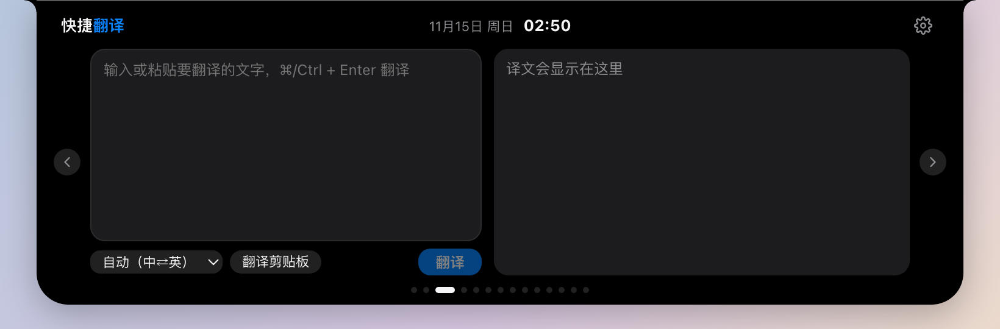
- 先在 设置 › 翻译 选择服务（DeepSeek、Kimi、通义千问、硅基流动、火山方舟、OpenAI 或自定义）并填写 API Key。
- 在左侧输入或粘贴文字，按 ⌘/Ctrl + Enter 或点「翻译」；「翻译剪贴板」直接翻译最近复制的文字。
- 方向默认「自动」：中文译成英文，其他语言译成中文；也可以固定译成中文、英文、日文、韩文。
- 任何地方按 ⌘ ⇧ T / Ctrl Shift T：小岛展开并立即翻译剪贴板内容。
日程
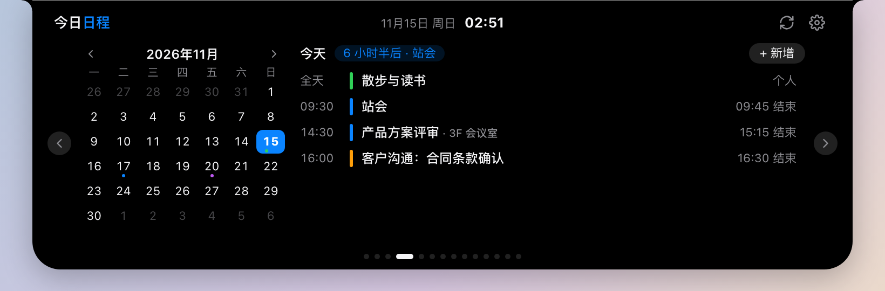
- 左边月历中有日程的日子带彩色小点；点某一天，右边列出当天日程。今天的顶部显示下一个会议还有多久。
- 点「+ 新增」添加本机日程（标题、开始时间、时长）；本机日程可以悬停后删除，远程日历只读。
- 会议开始前（默认 10 分钟）在小岛上提醒；收起时可以显示「下一个日程」。
- 添加日历：设置 › 日历，见下表。
| 日历 | 添加方式 |
|---|---|
| iCloud（推荐 CalDAV） | 添加 CalDAV 账户：地址 https://caldav.icloud.com，账号为 Apple ID，密码在 appleid.apple.com 生成「App 专用密码」 |
| iCloud 公开日历 | 日历 App 中共享日历 › 勾选「公开日历」，复制 webcal 链接，添加订阅链接 |
| Google 日历 | 日历设置 › 集成日历 › 「iCal 格式的私密地址」，添加订阅链接 |
| 飞书 / 钉钉 / 企业微信 | 在各自日历设置中找到「订阅 / 导出日历」或 CalDAV 同步，填订阅链接或 CalDAV 地址与账号 |
| Outlook / Exchange | Outlook 网页版 › 设置 › 日历 › 共享日历 › 发布日历，复制 ICS 链接 |
| .ics 文件 | 设置 › 日历 › 导入 .ics 文件，导入为本机日程 |
饮水提醒
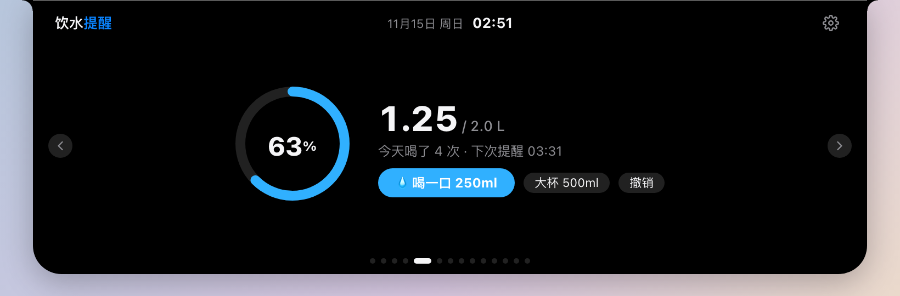
- 点「喝一口」记录一次（默认 250 ml），「大杯」记双份，「撤销」取消上一次。
- 在 设置 › 天气 · 饮水 · 专注 中打开提醒，设置每日目标、每次饮水量、提醒间隔和时段；在时段内距离上次喝水超过间隔时提醒，达到目标后不再提醒。
设备电量
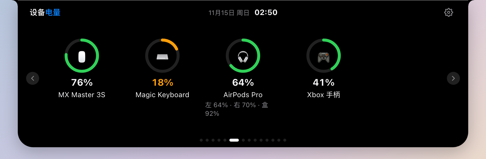
- 显示无线鼠标、键盘、触控板、耳机、手柄的电量，每 2 分钟刷新；AirPods 分别显示左耳、右耳和充电盒。
- 电量低于 20% 变橙色、低于 10% 变红色，并在小岛上提醒一次。
- macOS 支持 Apple 键盘 / 鼠标 / 触控板，以及 AirPods、Beats 等向系统报告电量的耳机；部分第三方蓝牙键鼠不向系统报告电量，暂时无法显示。
- Windows 支持在「设置 › 蓝牙和设备」中能看到电量的蓝牙设备。
AI 额度

每个工具一列：名称旁是套餐（如 Max、Plus），下面是各项额度的已用比例、进度条和重置倒计时；用到 70% 变橙色、90% 变红色。底部是今日 / 七日的 Token 用量与费用估算。
- Claude：用本机 Claude Code 的登录读取 5 小时与每周额度，每分钟刷新一次；Token 与费用来自
~/.claude/projects中的会话记录。 - Codex：读取
~/.codex/sessions中最近一次的额度快照（运行过 Codex 才会有），以及 Token 用量。 - 名称右边出现「旧」字，表示这次读取失败，显示的是上次成功读到的数据（悬停可看时间）。
- 想显示剩余而不是已用：设置 › 收起内容 › 显示剩余额度。
模型明细

按模型列出 Token 与费用，最贵的排在最前。左上角选择「全部」或某个工具，再选「今日」或「七日」；右上角是合计。
音乐与歌词
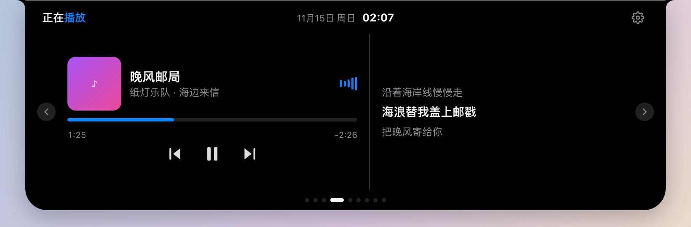
- 显示封面、歌名、歌手 · 专辑；点击或拖动进度条跳转；中间是上一首 / 播放暂停 / 下一首。
- 右侧是同步歌词（来自 LRCLIB），没有收录的歌曲显示「暂无歌词」。
- 收起时，在 设置 › 收起内容 打开「歌词 / 歌名」，小岛上就会显示当前一句歌词。
- macOS 支持 Spotify 和 Apple Music。Windows 支持所有接入系统媒体控制的播放器：网易云音乐、QQ 音乐、酷狗、Spotify、浏览器等。
系统监控
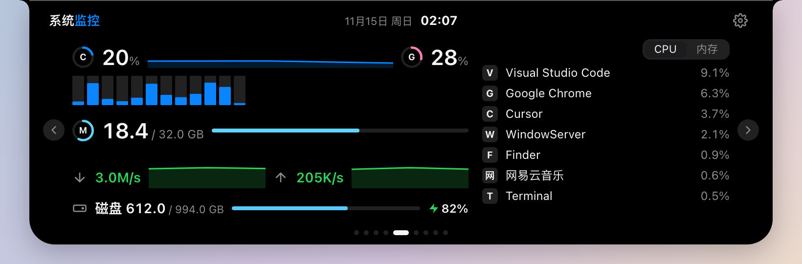
- 左侧：CPU 总占用和曲线、每个核心的柱状图、GPU、内存、下载 / 上传速度曲线、硬盘用量、电池（带闪电表示正在充电）。
- 右侧：占用最高的 7 个应用，点「CPU / 内存」切换排序；同一应用的多个子进程合并显示。
- 读数顺序和颜色在 设置 › 系统监控 中调整。
待办
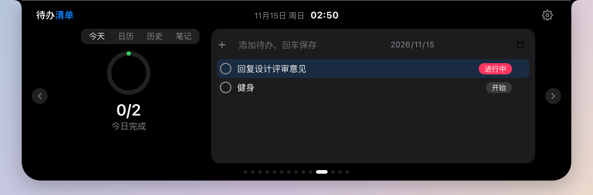
- 左上角切换四个视图：今天、日历（月历上点某天，查看或添加那天的待办）、历史（按日期列出过去的完成情况）、笔记（每天一页，自动保存）。
- 在输入框输入内容，按 Enter 添加；右侧日期可以把待办安排到以后的某一天；点左边的圆圈标记完成。
- 点「开始」把任务设为进行中（同一时间只有一个）；悬停后点 × 删除。
- 左边的圆环是今天的完成进度；没完成的任务会自动顺延到第二天。
番茄专注

- 点中间的 ▶ 开始，再点暂停；⟲ 重置当前时段。
- 「专注」「休息」切换模式；时长在 设置 › 天气与专注 中修改（默认 25 / 5 分钟）。
- 结束时小岛上提示，并自动切换到下一个时段；收起时可以显示倒计时（收起内容中打开「专注倒计时」）。
剪贴板
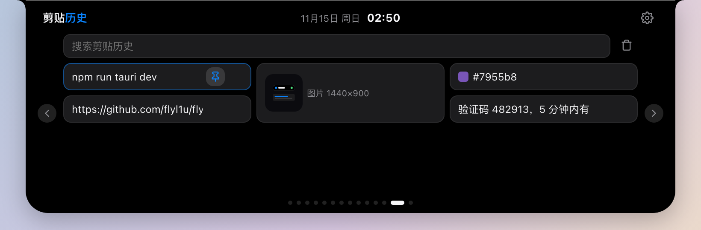
- 自动记录复制过的文字和图片（截图也会记录，最多 60 条），点一下就重新放回剪贴板。不想记录图片：设置 › 常规 › 记录剪贴板图片。
- 📌 置顶常用内容（清空时保留）；× 删除单条；右上角垃圾桶清空未置顶的记录。
- 颜色值（如
#7955b8）会显示色块；顶部可以搜索。 - 不想记录：设置 › 常规 › 记录剪贴板。
天气

当前温度、天气、体感、湿度、风速、日出日落，以及未来四天预报，每 15 分钟更新。默认按网络自动定位，也可以在 设置 › 天气与专注 填写城市（中英文都可以，按 Enter 保存）。
设置 › 常规
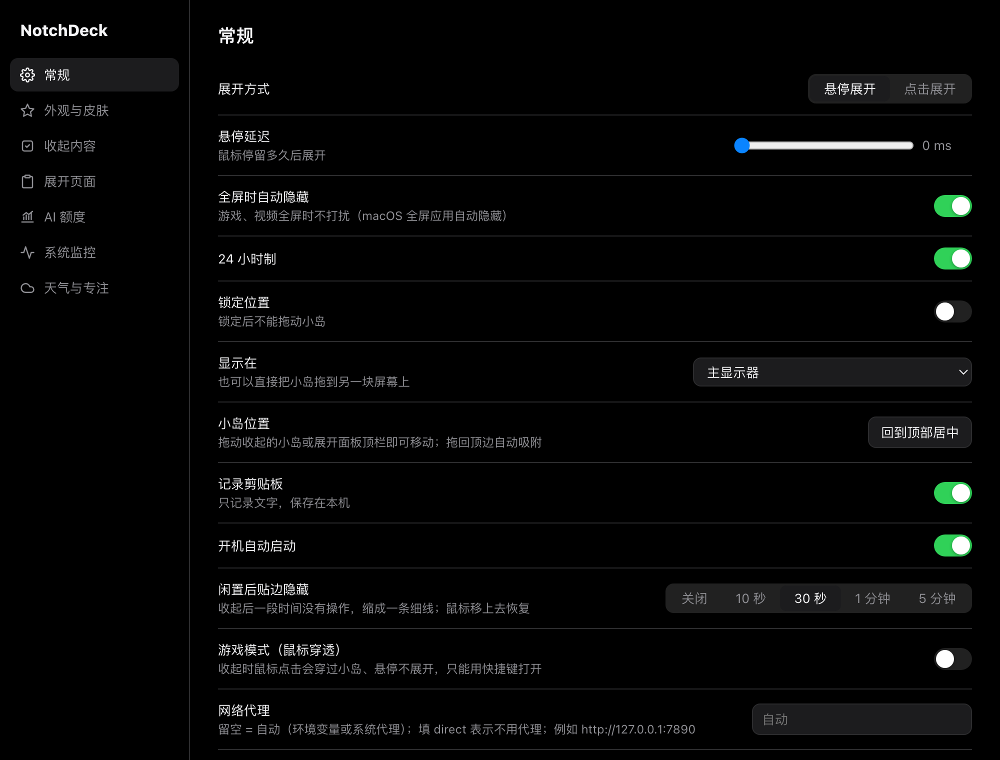
| 设置项 | 说明 |
|---|---|
| 展开方式 / 悬停延迟 | 悬停展开或点击展开；鼠标停留多久后展开 |
| 全屏时自动隐藏 | 其他应用全屏时隐藏小岛 |
| 24 小时制 | 时间显示方式 |
| 锁定位置 / 显示在 / 小岛位置 | 防止误拖；指定显示器；一键回到顶部居中 |
| 记录剪贴板 | 是否记录复制的文字 |
| 开机自动启动 | 登录系统后自动运行 |
| 闲置后贴边隐藏 | 收起后一段时间不操作，缩成一条细线；鼠标移上去恢复 |
| 游戏模式（鼠标穿透） | 收起时鼠标点击会穿过小岛、悬停不展开，只能用快捷键打开 |
| 网络代理 | 留空自动使用环境变量或系统代理；填 direct 不使用代理；也可以填 http://127.0.0.1:7890 这样的地址 |
| 快捷键 | 见快捷键 |
设置 › 外观与皮肤
- 皮肤：经典黑、奶油、毛玻璃 · 浅 / 深、One Dark Pro、Dracula、Night Owl、GitHub Light、赛博朋克；选「自定义」可以分别调整背景、文字、强调色等六种颜色。
- 形态：刘海（贴住屏幕边缘）、胶囊（悬浮）或指示条（平时只是一条细线）。
- 大小与背景不透明度。
设置 › 收起内容
- 拖动 ⋮⋮ 调整顺序，打开开关显示在收起的小岛上。可选：消息提醒、文件中转数量、下一个日程、饮水进度、设备电量、专辑封面、AI 额度环、CPU 核心柱、CPU / 内存 / GPU 表盘、网速、歌词 / 歌名、律动条、时间、天气、专注倒计时、待办进度。
- 额度环：单环显示用得最多的一项；多环最多显示三项（从外到内）。额度环只显示在「AI 额度」设置中勾选了「收起时显示环」的工具。
- 显示剩余额度、额度提醒（70% / 90% 时提示）、自适应宽度。
设置 › 展开页面
拖动调整页面顺序，开关控制是否显示；下方可以直接输入面板的宽和高。
添加 AI 额度来源
在 设置 › AI 额度 底部选择来源，点「添加」。每一行可以开关、改名、改颜色、拖动排序，以及决定是否在收起时显示额度环。
| 来源 | 需要准备 |
|---|---|
| Claude | 在本机用 claude 命令登录过 Claude Code（Pro / Max / Team 账户） |
| Codex | 在本机运行过 Codex CLI |
| Cursor（实验性） | 在本机登录 Cursor 即可，不需要填写 |
| Antigravity（实验性） | Antigravity 桌面版需要正在运行 |
| 智谱 GLM / Z.ai | GLM Coding Plan 的 API Key |
| Kimi Code | Kimi Code 控制台创建的 API Key（sk-kimi- 开头） |
| DeepSeek | 在 DeepSeek 开放平台创建的 API Key |
| OpenRouter | OpenRouter API Key（sk-or-v1- 开头） |
| Kimi（Moonshot 开放平台） | Moonshot 开放平台的 API Key，国内版和国际版都可以 |
| 自定义命令 | 一条命令，输出 JSON，例如 [{"title":"本月","percent":42,"resetAt":"3 天后"}]，或输出一行纯文本 |
| 自定义 HTTP | HTTPS 地址、请求头（JSON），以及百分比 / 数值所在的字段路径，如 data.balance、items.0.percent |
API Key 填好后按 Enter 或点「保存」，会存入系统钥匙串（macOS）/ 凭据管理器（Windows），输入框不会再显示原值；点「删除」可移除。
系统状态提示
以下变化会在收起的小岛上短暂显示，可以在 设置 › 常规 › 系统状态提示 中逐项关闭：
- 音量：调节音量或静音时显示音量条。
- 大写锁定：开启 / 关闭时提示。
- 输入法：切换输入法时显示名称；Windows 中文输入法还会显示「中 / 英」状态。
- 网络：断网与恢复时提示。
- 电源：接通 / 断开电源、电量降到 20% 和 10% 时提示。
- 设备：无线设备电量低时提示。
自动更新
NotchDeck 启动 30 秒后和之后每天检查一次新版本，有新版本时在小岛上提示。到 设置 › 关于与更新 点「下载并安装」，完成后点「重启以完成更新」。也可以随时点「立即检查」，或关闭自动检查。
常见问题
Claude 列显示「没有权限（HTTP 403）：Request not allowed」
这是 Anthropic 对所在网络地区的限制。如果你平时通过代理使用 Claude Code，NotchDeck 也需要走同一个代理：它会自动读取 HTTPS_PROXY 环境变量和系统代理；如果你的代理只在终端里生效，请在 设置 › 常规 › 网络代理 中填写，例如 http://127.0.0.1:7890。
Claude 列提示令牌缺少 user:profile 权限
用 claude setup-token 生成的令牌或第三方代理登录无法读取额度。在终端运行 claude，输入 /login 用账户重新登录即可。Token 与费用统计不受影响。
Codex 显示「暂无额度数据」
额度来自 Codex 写入本地的会话记录，运行一次 Codex 后就会出现。
小岛被菜单栏挡住 / 位置不对
到 设置 › 常规 点「回到顶部居中」。如果你调过显示器排列，也可以在「显示在」里重新选择显示器。
鼠标移上去不展开
检查是否打开了「游戏模式」（打开后只能用快捷键展开），以及「展开方式」是否为「点击展开」。
Windows 微信有消息但岛上没有提醒
微信需要在任务栏上有按钮才能闪烁提醒；如果微信只缩在托盘里，请把它打开放在任务栏。通知中心的消息需要允许通知访问，见消息提醒。
正在播放没有显示
macOS 目前支持 Spotify 和 Apple Music，首次需要允许自动化权限（系统设置 › 隐私与安全性 › 自动化）。Windows 需要播放器支持系统媒体控制（音量浮窗里能看到歌曲信息即可）。
翻译提示「请先填写 API Key」或 HTTP 401
到 设置 › 翻译 确认服务、接口地址、模型和 API Key 都已填写；火山方舟的「模型」要填推理接入点 ID（ep- 开头）。
日历显示「账号或密码不对」
iCloud 不能用 Apple ID 的登录密码，需要在 appleid.apple.com 生成 App 专用密码。订阅链接以 webcal:// 开头也没关系，会自动转换成 https。
文件拖到小岛上没有反应
拖动时要停在小岛上（收起的刘海或展开的面板都可以），小岛展开后再松手。
快捷键不起作用
组合键可能被其他应用占用，设置页的快捷键区域会显示提示；换一个组合即可。
数据位置与卸载
| 内容 | 位置 |
|---|---|
设置、待办、笔记、本机日程、饮水记录、文件中转列表、剪贴板历史（图片在 clips 子目录）、天气缓存 | macOS ~/Library/Application Support/NotchDeckWindows %APPDATA%\NotchDeck |
| API Key、CalDAV 密码 | 系统钥匙串 / 凭据管理器，服务名 NotchDeck |
卸载：先在设置中关闭「开机自动启动」，然后 macOS 把 NotchDeck 从「应用程序」移到废纸篓；Windows 在「设置 › 应用」中卸载。如需同时删除数据，再删除上表中的目录，并在钥匙串 / 凭据管理器中删除 NotchDeck 条目。